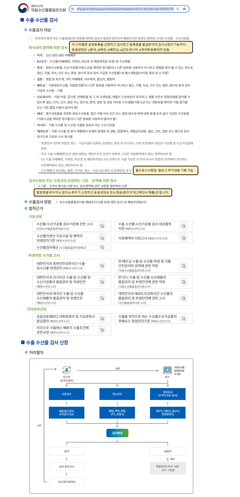

- 수산물 수출검사 설명 (약정체결 국가 정보 등)
- 약정체결 아닌 국가인 경우 수출검사
- 화주교부자료, 화주에게 요청할 자료 (출력물)
- x베트남 검사 기한 : 평일7일째 되는날까지
- x위임장, 가공일지 작성방법
- x[위임장, 가공일지 준비후] 전산 검사신청 방법
- x[방어의 수매확인서 등] 준비서류 및 확인사항
- x검사정보 샘플 모음 (영문품명 학명 등)
- x수출 수산물 등록공장 점검
- x수산물품질관리원 정보
- 사이트 알아보기 (로그인 등)
- 처음:업체정보(변경)등록요청 공문 등 경위
- 진형상태 메모
- 업체정보 (변경)등록 매뉴얼
- 업체정보 (변경)등록 내용
- (변경)등록 중에 제품등록만 따로 설명(설명회까지 함))
- (자료보관) 18개분류제품 외 자체신청물품
- (자료보관) 18개분류제품 외 자체신청물품 추가 매뉴얼
- 연장신청 공문 등 경위
- 연장신청 매뉴얼
▢ 개요

▢ 동일냉장이 등록한 나라 (등록번호) : 중국, 베트남, 태국, 인도네시아
중국 등록번호 : KP-034, 중국에서 관리하는 등록번호 : CKOR18PP1805010017 (스티커에 두개다 기재해야함)
태국 등록번호 : KTH-026
베트남 등록번호 : KVN-044
인도네시아 등록번호 : KID-024
▢ 수품원에서 확인하는 필수정보 4가지 [화주에 교부자료] , 나머지는 화주의 필요에 따라 추가 가능
가공장 주소 : 중국에는 상호와 주소를 함께 쓰는데 다른 나라의 경우 상호명만 쓰는 경우도 봤음, 다 쓰는걸로 안내?
등록번호 : 도착하는 나라의 등록번호
수출국(export contruy) : the republic of korea
품명 : 영문 품명
▢ 동일냉장에 물품이 있는경우 화주가 직접 신청하면서 검사장소를 동일냉장으로 지정한 경우이다.
▢ 해당화주의 명의로 검사대상물의 재고확인서를 준비해 두었다가 검사원에게 제출하고 검사 입회한다.
일본 등, 약정에서 제외된 물품이거나 어떤 경우에라도 화주가 검사신청하는 경우 검사장소가 동일냉장인 경우.
약정에서 제외된 물품이거나 어떤 경우에라도 화주가 검사신청하는 경우 검사장소가 동일냉장인 경우.
1.
▢

Top